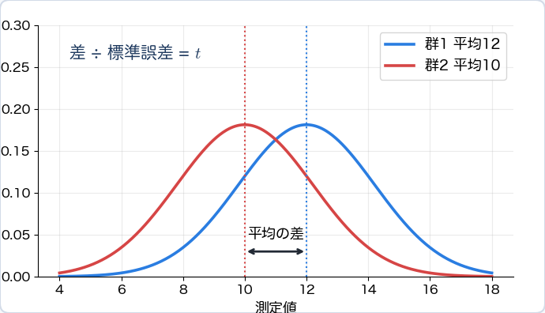
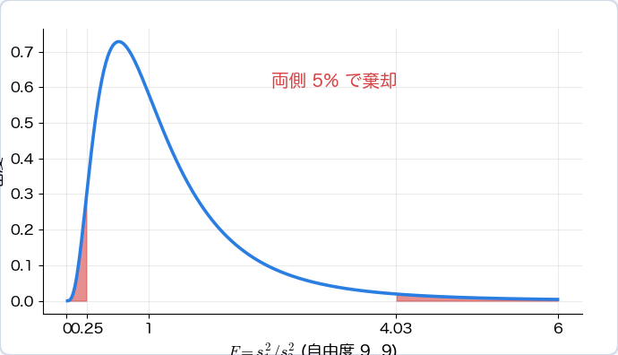
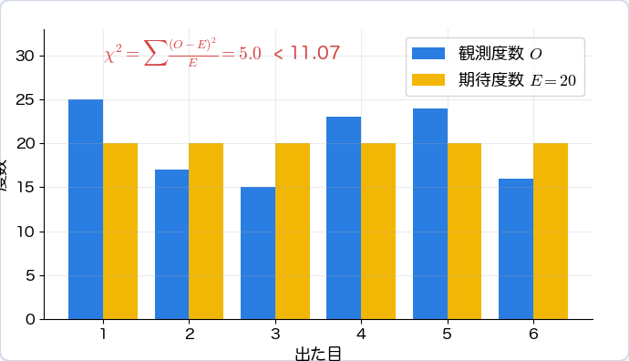
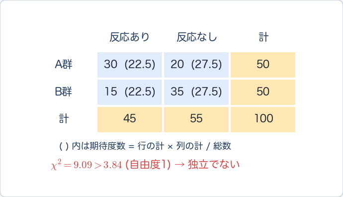
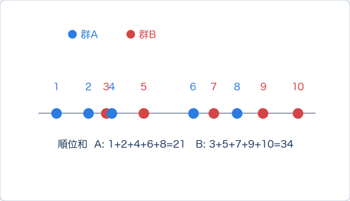
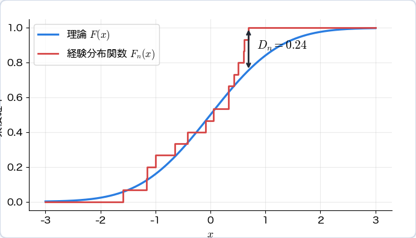
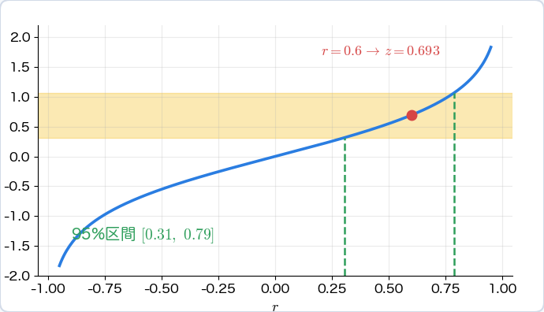

第7回 いろいろな検定
この回の学習目標
- 平均・分散・度数・順位・相関の検定を、前提条件と検定統計量の分布とセットで使い分けられる
- $\chi^2$ 検定の自由度の数え方を間違えない
- ノンパラメトリック検定が必要な場面を判断できる
1. 平均の差の検定（$t$ 検定）
| 場面 | 統計量 | 分布 |
|---|---|---|
| 1 標本 | $t=\dfrac{\bar x-\mu_0}{s/\sqrt n}$ | $t_{n-1}$ |
| 2 標本・等分散 | $t=\dfrac{\bar x_1-\bar x_2}{s_p\sqrt{1/n_1+1/n_2}}$ | $t_{n_1+n_2-2}$ |
| 2 標本・等分散を仮定しない（ウェルチ） | $t=\dfrac{\bar x_1-\bar x_2}{\sqrt{s_1^2/n_1+s_2^2/n_2}}$ | 自由度は近似式（ウェルチ・サタースウェイト） |
| 対応あり | 差 $d_i$ の 1 標本 $t$ 検定 | $t_{n-1}$ |
合併分散 $s_p^2=\dfrac{(n_1-1)s_1^2+(n_2-1)s_2^2}{n_1+n_2-2}$。迷ったらウェルチの検定が安全です。

2. 等分散性の検定
2 つの母分散が等しいか（$H_0:\sigma_1^2=\sigma_2^2$）は
$$F=\frac{s_1^2}{s_2^2}\sim F_{n_1-1,\ n_2-1}$$
で検定します。両側検定では下側の点 $F_{1-\alpha/2}(m,n)=1/F_{\alpha/2}(n,m)$（自由度を入れ替えた逆数）を使います。$F$ 検定は 正規性からのずれに敏感。3 群以上ならバートレット検定（正規性に敏感）やルビーン検定（頑健）。

3. 適合度検定
観測度数 $O_i$ が期待度数 $E_i$ に合っているかを検定します。
$$\chi^2=\sum_{i=1}^k\frac{(O_i-E_i)^2}{E_i}\ \sim\ \chi^2_{k-1-m}$$
（$m$：期待度数の計算のために データから推定した母数の数。）期待度数がどれも 5 以上が目安です。
例：サイコロを 120 回振って度数が $(25,17,15,23,24,16)$、期待度数は各 20。
$$\chi^2=\frac{25+9+25+9+16+16}{20}=5.0<\chi^2_5(0.05)=11.07$$
公平でないとは言えない。

4. 独立性の検定（分割表）
$r\times c$ 分割表で、行と列が独立かを調べます。独立なら 各セルの期待度数は
$$E_{ij}=\frac{R_iC_j}{N}\quad(\text{行の計}\times\text{列の計}\div\text{総数})$$
統計量は適合度と同じ形で、自由度は $(r-1)(c-1)$。
| 反応あり | 反応なし | 計 | |
|---|---|---|---|
| A 群 | 30 (22.5) | 20 (27.5) | 50 |
| B 群 | 15 (22.5) | 35 (27.5) | 50 |
| 計 | 45 | 55 | 100 |
（ ）は期待度数。$\chi^2=\dfrac{7.5^2}{22.5}+\dfrac{7.5^2}{27.5}+\dfrac{7.5^2}{22.5}+\dfrac{7.5^2}{27.5}\approx9.09>\chi^2_1(0.05)=3.84$ なので独立でない。期待度数が小さい 2×2 表には フィッシャーの正確検定 を使います。

5. ノンパラメトリック検定
分布の形を仮定せず、データを 順位 に置き換えて使う検定です。
| 場面 | 検定 |
|---|---|
| 2 群（対応なし） | ウィルコクソンの順位和検定（マン・ホイットニーの $U$ 検定） |
| 2 群（対応あり） | ウィルコクソンの符号付順位検定、符号検定 |
| 3 群以上 | クラスカル・ウォリス検定 |
| 相関 | スピアマンの順位相関、ケンドールの $\tau$ |
全体で順位をつけ、片方の群の順位の和を統計量にします。正規分布のときでも $t$ 検定より検出力は少し落ちるだけなので、分布が怪しいときの安全な選択です。

6. コルモゴロフ・スミルノフ検定
分布全体の適合を、経験分布関数 $F_n(x)$ と理論の分布関数 $F(x)$ の最大の差
$$D_n=\sup_x|F_n(x)-F(x)|$$
で検定します。2 標本の分布の比較にも使えます。母数を標本から推定した場合は臨界値が変わる（リリフォース検定など）ことに注意。

7. 相関係数の検定
母相関 $\rho=0$ の検定は
$$t=\frac{r\sqrt{n-2}}{\sqrt{1-r^2}}\sim t_{n-2}$$
$\rho\ne0$ の仮説や信頼区間には フィッシャーの $z$ 変換 を使います。
$$z=\tanh^{-1}r=\frac12\ln\frac{1+r}{1-r}\approx N\left(\tanh^{-1}\rho,\ \frac1{n-3}\right)$$
$z$ の区間を作って $\tanh$ で戻すと $\rho$ の信頼区間です。$n=30$, $r=0.6$ なら $z=0.693$、$z\pm1.96/\sqrt{27}=[0.316,1.070]$、逆変換して約 [0.31, 0.79]。

演習問題
演習1 2 標本の $t$ 検定
問題 2 群各 10 人、平均 12 と 10、不偏分散 4 と 6。母分散が等しいとして平均の差を 5% で検定せよ（$t_{18}(0.025)=2.101$）。
解答 $s_p^2=\dfrac{9\cdot4+9\cdot6}{18}=5$、標準誤差 $\sqrt{5\cdot\dfrac2{10}}=1$、$t=\dfrac{12-10}{1}=2.0$。$2.0<2.101$ なので 有意でない（差があるとは言い切れない）。
演習2 独立性の検定
問題 A 群 30 人中 18 人、B 群 30 人中 10 人が反応あり。反応の有無は群と独立か、5% で検定せよ（$\chi^2_1(0.05)=3.84$）。
解答 反応ありの合計 28、なし 32。期待度数は反応あり 14、なし 16（各群）。$|O-E|=4$。
$$\chi^2=16\left(\frac1{14}+\frac1{16}+\frac1{14}+\frac1{16}\right)=16\times0.2679\approx4.29>3.84$$
5% 水準で 独立でない。
演習3 自由度の数え方
問題 ポアソン分布への適合を調べるため、データを 0, 1, 2, 3, 4 以上の 5 カテゴリーに分け、$\lambda$ をデータから推定した。$\chi^2=6.5$。自由度と 5% での判断は（$\chi^2_3(0.05)=7.81$）。
解答 自由度 $=5-1-1=\mathbf3$。$6.5<7.81$ なので、ポアソン分布に従うという仮説は 棄却できない。推定した母数の分を引き忘れて自由度 4 にしてしまうと、判断の基準がずれる。
演習4（発展） 対応のある $t$ 検定
問題 同じ 5 人の薬の投与前後の差が $+2,+3,+1,+4,+0$。平均差が 0 かを 5% で検定せよ（$t_4(0.025)=2.776$）。
解答 $\bar d=2$, $s_d^2=\dfrac{0+1+1+4+4}{4}=2.5$, $s_d=1.58$。$t=\dfrac{2}{1.58/\sqrt5}=2.83>2.776$ で 有意。
まとめ・チェックリスト
- [ ] $t$ 検定（1 標本・2 標本・ウェルチ・対応あり）を使い分けられる
- [ ] $F$ 検定・適合度・独立性の統計量と自由度（$k-1-m$、$(r-1)(c-1)$）を言える
- [ ] 順位検定・KS 検定が必要な場面を説明できる
- [ ] 相関係数の検定とフィッシャーの $z$ 変換を使える
次回：線形回帰モデル
動画の音声：VOICEVOX:ずんだもん / VOICEVOX:四国めたん 立ち絵：坂本アヒル様